시내에서 자동차로 30분 거리에 11.6㎢짜리 정글이 있습니다. 부동산 논리로 보면 있을 수 없는 일입니다. 이 글은 왜 있는지에 대한 것입니다.
1. 숫자와 지리
| 면적 | 약 11.6㎢ (여의도의 4배) |
| 행정구역 | 🔴 방콕이 아니라 사뭇쁘라깐 주 |
| 시내에서 거리 | 직선 약 5km |
| 별명 | 「방콕의 허파」 · 「푸 아이 끄룽텝」 |
| 다리 | 🔴 없다. 배로만 건넌다 |
| 스리 나콘 케우안 칸 공원 | 무료, 05:00~19:00 |
| 방남픙 수상시장 | 🔴 토·일 08:00~16:00만 |
모양이 핵심이다. 짜오프라야 강이 여기서 극단적으로 굽어 U자 고리를 만든다. 목이 좁고 안이 넓은 반도라서, 지도로 보면 코끼리 코 같기도 하고 심장 같기도 하다. 태국어 「방까차오」는 이 굽이를 가리키는 지명이다.
2. 첫 번째 이유 — 다리가 없다
가장 단순하고 강력한 이유다. 차가 못 들어간다.
- 방콕 쪽에서 건너는 방법은 소형 목선 페리뿐이다. 사람 ฿10, 오토바이는 실을 수 있지만 자동차는 안 된다
- 육로로 들어가려면 반도 목 쪽(프라쁘라댕)으로 크게 돌아야 하는데, 그 길이 좁다
- 🔴 대형 개발은 공사 차량과 자재를 못 넣으면 시작조차 안 된다
같은 논리가 톤부리와 꾸디찐에도 적용된다. (→ 「동양의 베니스」 §7, 「꾸디찐」 §5) 방콕에서 살아남은 것들의 공통점은 접근성이 나빴다는 것이다.
3. 두 번째 이유 — 제도적으로 묶었다
여기가 이 이야기의 핵심이다. 🔴 1977년 태국 내각이 이 지역을 「그린 에어리어(녹지 보전 구역)」로 지정했다.
왜 그랬나. 1970년대 방콕은 급속히 팽창하며 대기오염과 홍수가 동시에 악화되고 있었다. 정부는 이 반도가 두 가지 기능을 한다고 봤다.
- 녹지·대기 정화 — 도심 바로 옆의 숲
- 🔴 홍수 완충 — 강이 넘칠 때 물을 받아내는 저지대
규제 내용 (⚠️ 구체 조항은 확인하지 못했다)
- 건축 높이·용적 제한
- 토지 용도 변경 제한
- 왕실 프로젝트로도 보전이 지원됐다 — 스리 나콘 케우안 칸 공원이 그 결과다
즉 이 정글은 「남은」 게 아니라 「남긴」 것이다. 자연이 아니라 제도다.
4. 세 번째 이유 — 땅이 잘게 쪼개져 있다
부동산 실무의 문제다. 방까차오의 토지는 오래된 과수원 단위로 잘게 나뉘어 상속돼 왔다.
- 필지가 작고 소유자가 많다
- 상속이 여러 세대 반복되며 공동소유 지분이 복잡해졌다
- 대규모 개발을 하려면 수십~수백 명에게서 땅을 사야 한다
- 🔴 규제가 있어 개발이 확실치 않은데 매수 비용은 크다 → 아무도 시작하지 않는다
여기에 코코넛·망고 과수원과 맹그로브 습지라는 지목 특성이 겹친다. 물이 드나드는 땅이라 성토 비용도 크다.
5. 그래서 무엇이 생겼나 — 고가 자전거길
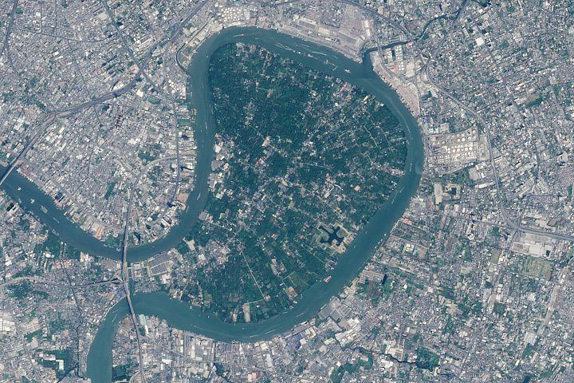
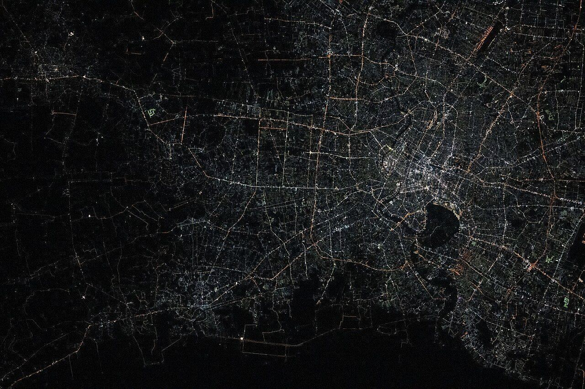
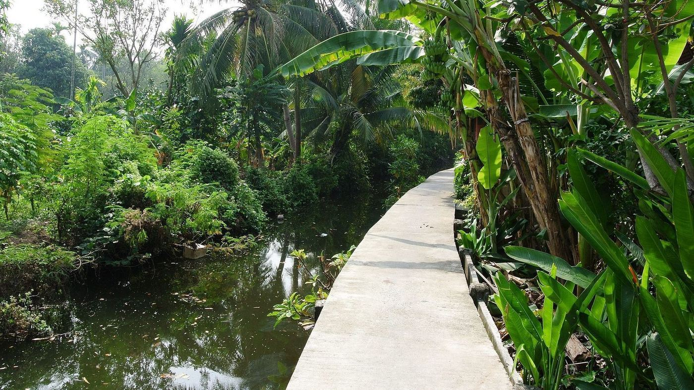
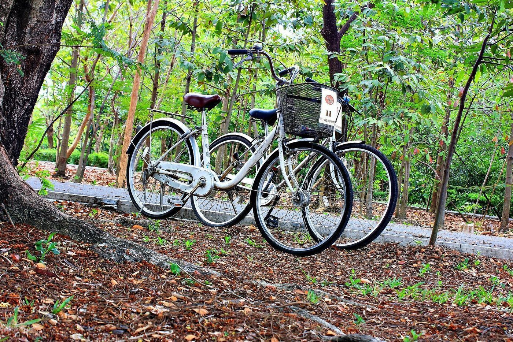
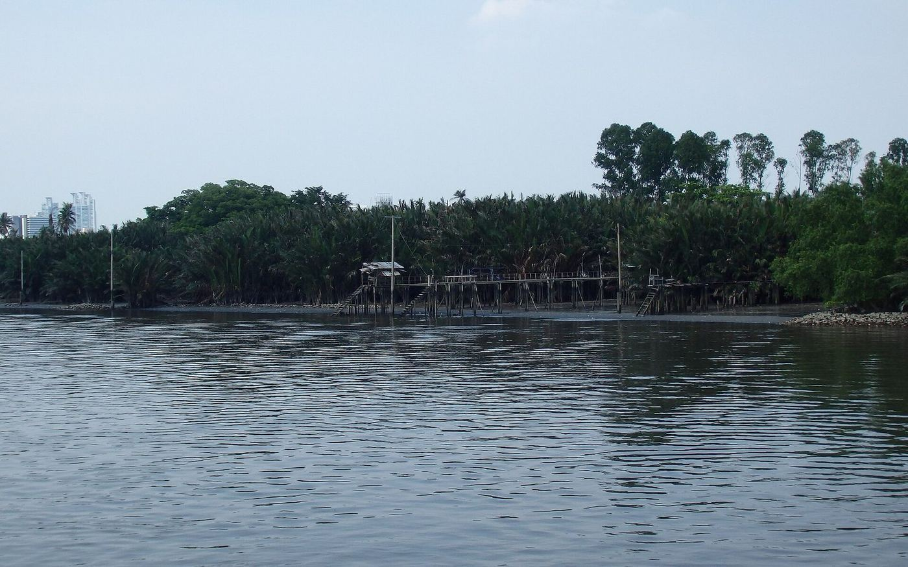
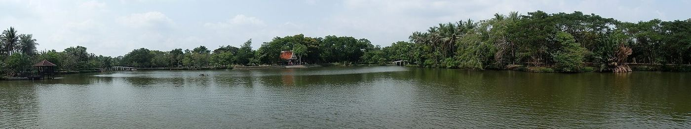
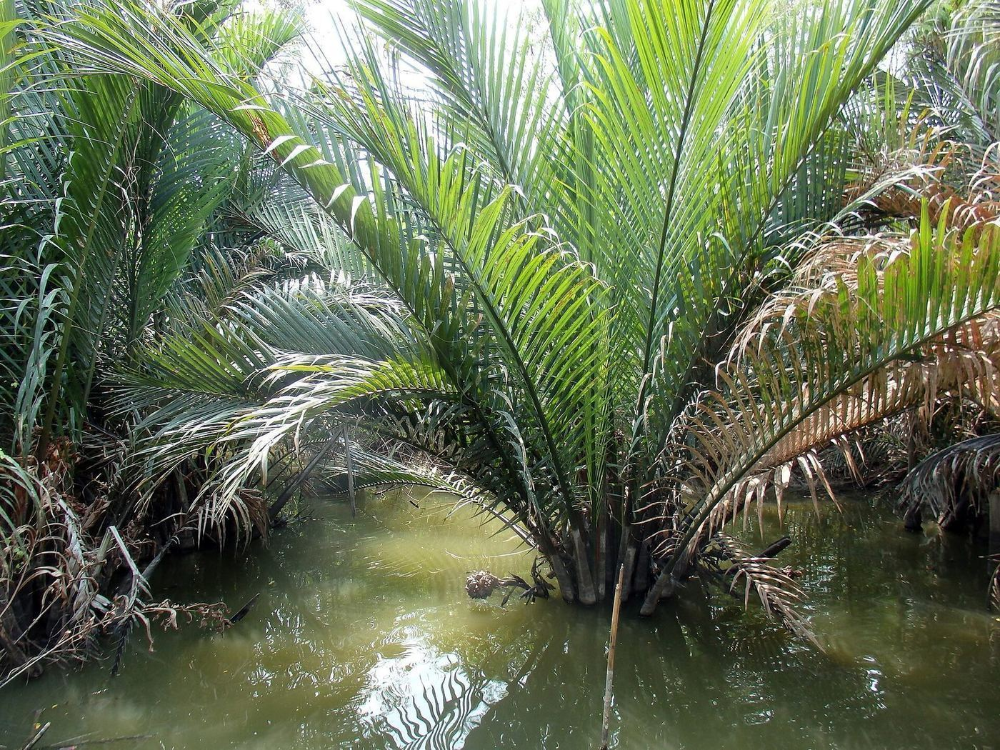
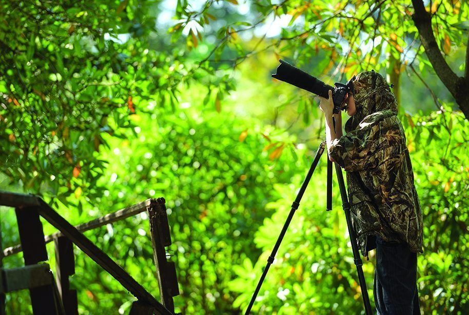
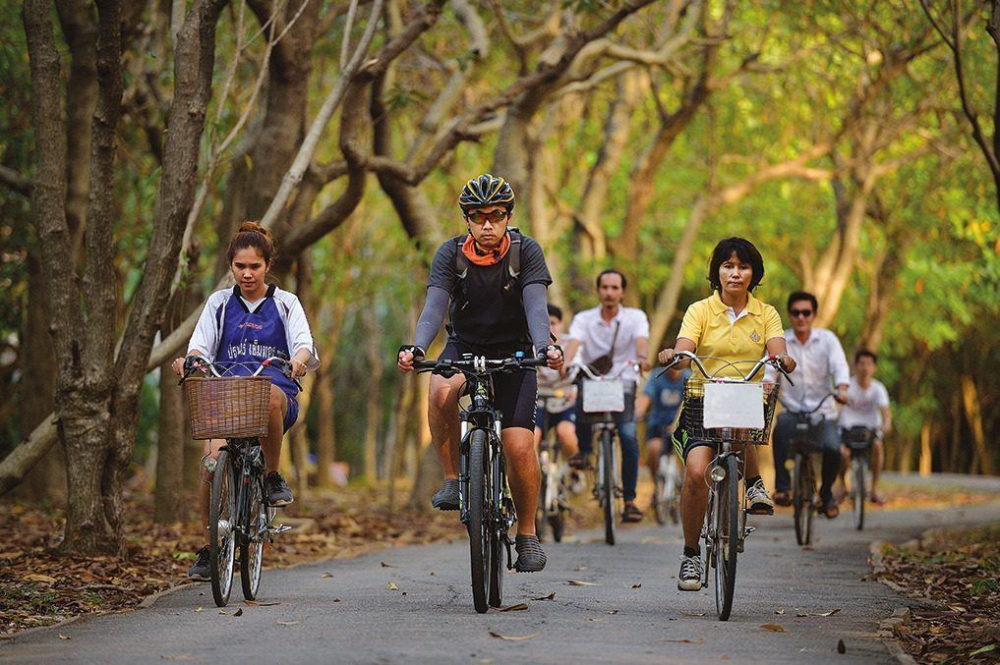
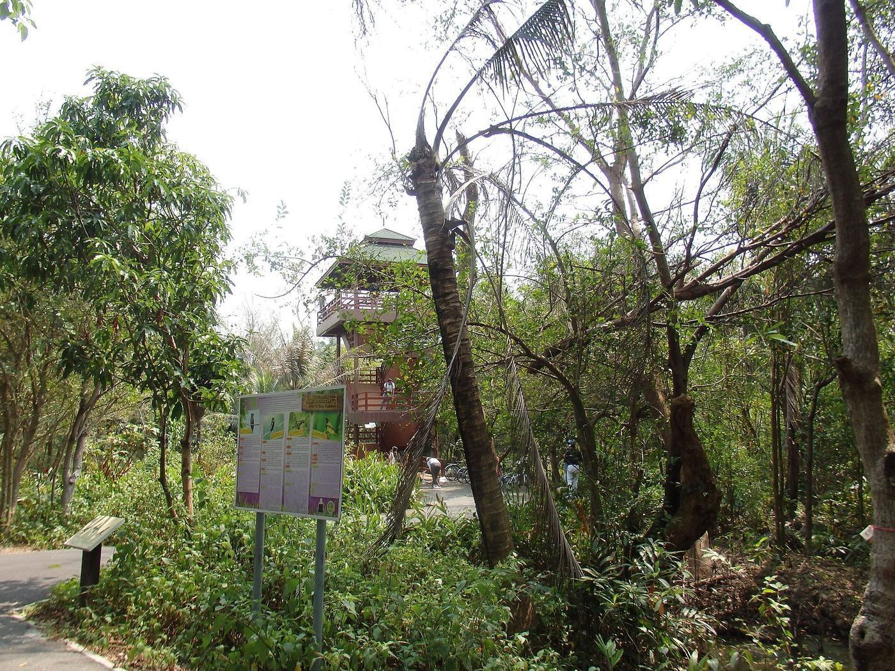
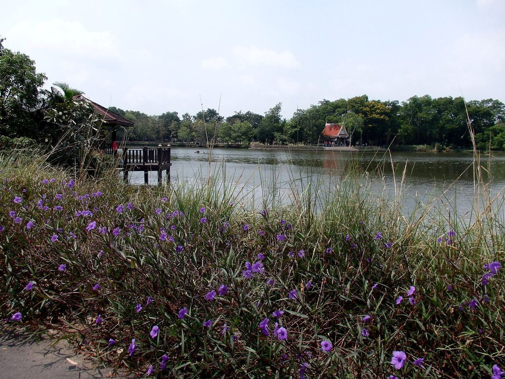
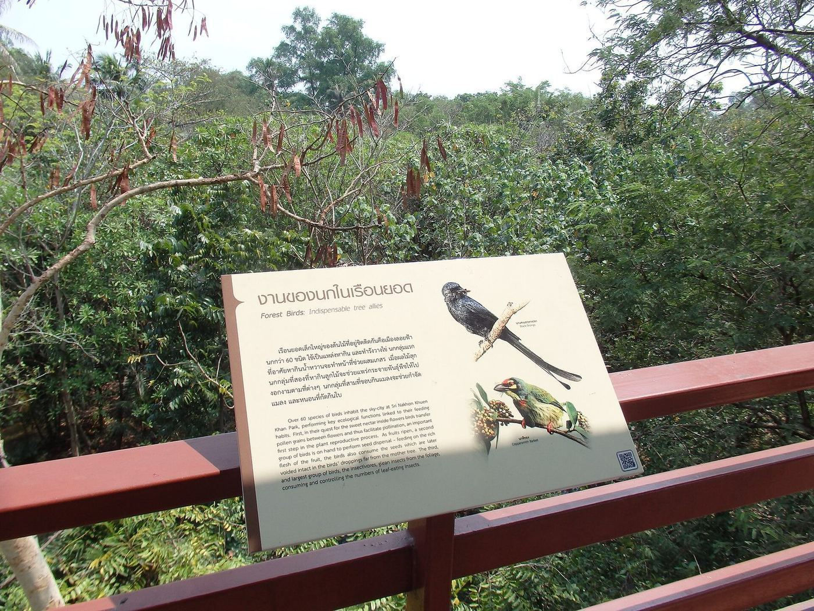
개발이 안 된 대신 이 지역은 자전거로 유명해졌다.
🔴 고가 콘크리트 보도가 이 지역의 정체성이다. 지면에서 1~2m 띄운 폭 1~1.5m짜리 좁은 길이 습지와 과수원 사이를 지그재그로 관통한다.
왜 띄웠나. 홍수 지대이기 때문이다. 이 지역은 애초에 물이 드나드는 땅이라 집도 전부 고상식이다. 사람이 다닐 길도 같은 논리로 띄웠다. 즉 이 자전거길은 관광용으로 만든 게 아니라 원래 마을 길이다.
| 클래식 루프 | 약 20km |
| 등록된 GPX 루트들 | 18.9~24.5km |
| 인기 관광 루트 | 약 31km |
| 🔴 2인 반나절 현실치 | 12~18km · 3~4시간 |
🔴 반드시 알아야 할 것 구글맵에 고가 좁은길이 상당수 안 나오거나 끊겨서 나온다. Bikemap·Komoot·AllTrails에 GPX 루트가 여러 개 등록돼 있으니 출발 전에 폰에 내려받아 오프라인으로 쓰는 게 사실상 필수다. 이 지역 후기의 가장 흔한 불만이 「길을 잃었다」이다.
6. 지금 — 무엇이 바뀌고 있나
관광이 들어오고 있다. Bangkok Tree House 같은 에코 리조트, 카페, 주말 시장이 늘었다. 코로나 이후 방콕 사람들의 근교 자전거 수요가 커지면서 방문객이 증가했다.
🔴 그리고 규제 완화 압력이 있다. 도심에서 5km인 11.6㎢짜리 땅의 잠재 가치는 막대하다. 개발업자와 일부 지주가 규제 완화를 요구해 온 것으로 보도된다. ⚠️ 구체적인 현행 논의 상황은 확인하지 못했다.
동시에 반대 논리도 강해졌다. 2011년 대홍수 이후 「홍수 완충지가 필요하다」는 인식이 커졌고 (→ 「방콕은 매년 가라앉는다」), 기후 대응 관점에서 도심 녹지의 가치가 재평가됐다.
즉 이곳의 미래는 아직 결정되지 않았다. 우리가 자전거를 타는 그 길이 20년 뒤에도 있을지는 정치의 문제다.
7. 한국과 비교하면 — 그린벨트
🔴 대응물이 정확히 있다. 개발제한구역(그린벨트)이다.
| 방까차오 | 한국 그린벨트 | |
|---|---|---|
| 지정 | 1977년 내각 결정 | 1971년 도입 |
| 목적 | 녹지·대기·홍수 완충 | 도시 확산 억제·환경 보전 |
| 소유 | 사유지 다수, 잘게 분할 | 사유지 다수 |
| 압력 | 도심 5km 거리의 잠재 가치 | 수도권 지가 상승 |
| 🔴 지금 | 관광이 들어오는 중 | 지속적으로 해제·완화되고 있다 |
두 제도의 도입 시기가 6년 차이라는 게 흥미롭다. 1970년대 아시아 대도시들이 같은 문제(급팽창)에 같은 처방(선을 그어 묶는다)을 냈다.
차이는 그 뒤다. 한국의 그린벨트는 반복적으로 해제됐다. 방까차오는 다리가 없다는 물리적 조건 덕분에 제도만으로 못 막았을 것을 함께 막았다. 🔴 제도와 지리가 겹쳐야 땅이 남는다는 것이 이 사례의 교훈이다.
8. 여행에서 실제로 볼 것
| 🔴 선착장 | BTS 방나 역 → 왓 방나 녹 → 방남픙 녹. 투어가 쓰는 왓 클렁떠이 녹은 반도 북쪽 끝이라 볼 게 없다 |
| 고가 보도 | 난간이 없고 90도로 꺾인다. 맞은편에서 사람이 온다 |
| 고상식 집 | 왜 띄워 지었는지가 눈에 보인다 |
| 스리 나콘 케우안 칸 공원 | 무료 · 05:00~19:00 · 왕실 프로젝트의 결과물 |
| 방남픙 수상시장 | 🔴 토·일 오전에만. 평일이면 밀도가 절반 |
| 강 건너 스카이라인 | 정글 너머로 방콕 고층 빌딩이 보인다. 이 대비가 이 장소의 전부다 |
🔴 리스크
- 길 잃기 — GPX 필수
- 낙차 — 난간 없는 폭 1~1.5m + 90도 코너. 헬멧이 대여소에 있을지 보장 안 된다
- 🔴 비 — 이끼 낀 콘크리트는 젖으면 매우 미끄럽다. 비 예보가 있으면 그날은 접어라
- 물·화장실 — 공원과 시장에는 있고 마을 구간에는 없다
이어 읽기
- 「방콕은 매년 가라앉는다」 — 왜 홍수 완충지가 필요한가
- 「동양의 베니스는 어쩌다 도로의 도시가 됐나」 — 접근성이 도시를 어떻게 나눴나